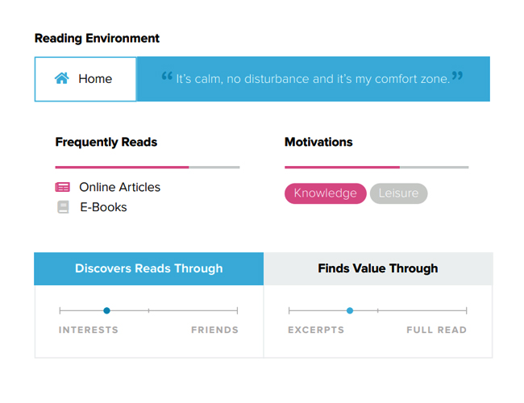

Aug. 2018
User Stories
IA & Userflow
UX Strategy
Interface Design
This project unfolded as a part of my third year's UX module. After brainstorming a few ideas for a new mobile application, one finally stood out to us.
We visualized an app that allows readers to highlight and share those certain lines that they find truly valuable while reading an article online.
The next step forward was to iteratively define our vision and mission statement. Our goal was to articulate something that was just as open-ended as it was defined.
To achieve this, we worked our way up the Golden Circle.
For expression
Sharing highlights
Readers' platform
Derived Statement
— To add a new layer of expression to the experience of reading by creating a platform for readers to share selected excerpts on and to discover value through the shared selections of other readers.
To create a thoughtful experience, we had to first identify our users. We crafted a fairly open-ended survey and deployed it on social groups.
Here are some of the questions that we asked -
What kind of environment do you usually read in?
Why does the above-selected environment work
out for you?
What motivates you to read?
We identified two most common user profiles: The Screen Reader and The Paper Reader.
The Screen Reader
The Paper Reader

The insights that we got from our scenarios helped us to strategize further. We translated them to almost every next-step of the process.
UX Strategy
It was clear to us that the platform should be "content-first" and "social-second". We had to prioritize content over responses, highlights over names, and curation over feed.
UI Strategy
Our primary users prefer a certain environment for reading. The interface had to resonate that calm, comforting and non-disruptive environment.
Brand Strategy
The brand had to align itself in a way that would encourage meaningful highlight sharing. So it was mindful at its core, expressive on the inside, and inviting on the outside.
To create the userflows, we focused on our UX strategy. Fetching valuable highlights for the reader came first, whereas navigation to their public profile came last.
Task 1 - To share a highlight
The userflow will typically initiate when the user makes a text selection on their browser, hits 'share', and then selects 'Spotlight' from the app drawer.
Task 2- To discover a highlight
The userflow will initiate at the 'Home' Screen which curates highlights based on the user's interests, followings, and recent engagements.
Next step was to wireframe almost 15-16 screens. We went with a good old pencil and paper for this one.
After getting the wireframes right, we moved on to the UI of the application. Our focus was to make good readable typography an integral part of our interface.

Brainstorming on a whiteboard is quite fun.
Start with 'why', 'how', and 'what'.
Facebook groups can blast your survey's reach.
Visual consistency is just a step away from 'boring'.
Keep your notes away from apple juice.